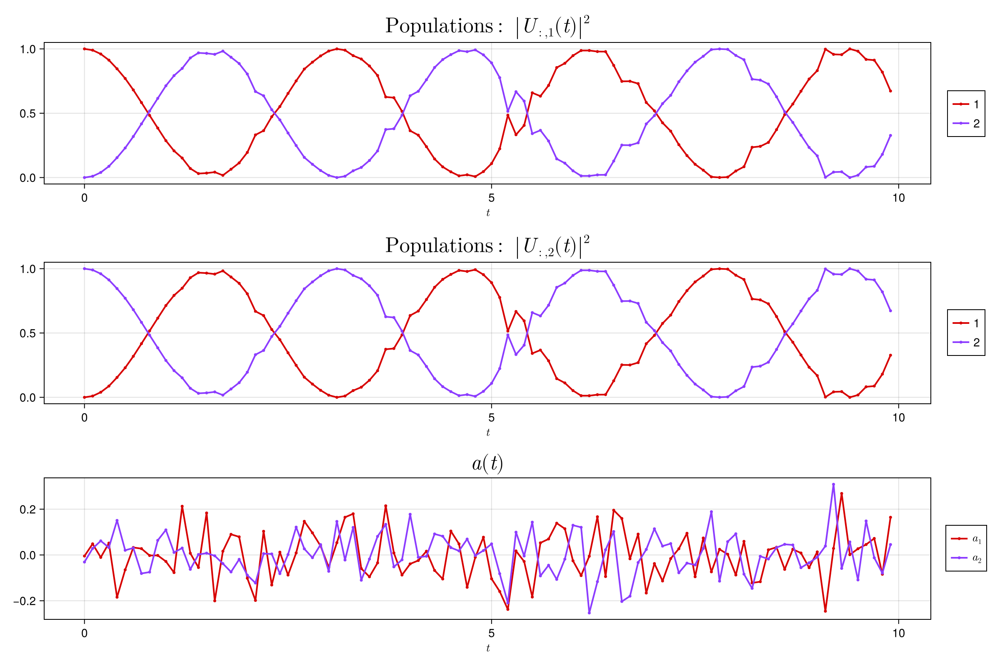

| Documentation | Build Status | License | Support |
Easy plotting of quantum control trajectories
PiccoloPlots.jl
PiccoloPlots.jl is designed to hold plotting recipes for the Piccolo.jl package. It utilzes the plot method of the NamedTrajectories.jl.
Installation
PiccoloPlots.jl can be installed using the Julia package manager. From the Julia REPL, type ] to enter the Pkg REPL mode and run:
julia> ] add PiccoloPlotsUsage
As a simple example, we provide the plot_unitary_populations function which plots the populations of select columns of the unitary matrix. This can be employed as follows:
using NamedTrajectories
using PiccoloQuantumObjects
using PiccoloPlots
# Define the Hamiltonian H = X + a_1(t)Z + a_2(t)Y
H_drift = PAULIS[:X]
H_drives = [PAULIS[:Z], PAULIS[:Y]]
# Generate control trajectory
N = 100
Δt = 0.1
ts = collect(0:Δt:Δt*(N-1))
a = 0.1 * randn(length(H_drives), length(ts))
# Generate the unitaries
Us = exp.(-im * [(H_drift + sum(a[:, k] .* H_drives)) * ts[k] for k = 1:N])
# Create a NamedTrajectory
traj = NamedTrajectory(
(
Ũ⃗ = hcat(operator_to_iso_vec.(Us)...),
a = a
);
controls = :a,
timestep = Δt
)
# Plot the populations of the first and second qubits
plot_unitary_populations(traj)